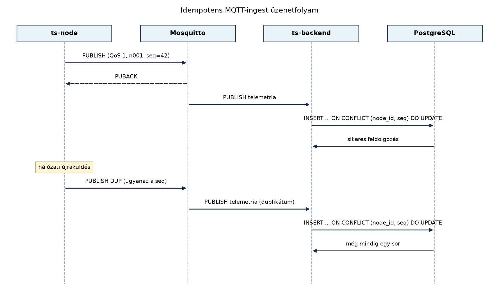

A TerraSense rendszerben a telemetria a
terrasense/<site>/<node>/telemetry topicra
érkezik, és a MQTT QoS, munkamenetek, retain, Last
Will és MQTT 5 alfejezetben meghatározott konvenció szerint QoS 1-es
publikálással utazik. A QoS 1 garantálja, hogy az üzenet legalább
egyszer megérkezik a brokerhez, de a hálózati hibák utáni újraküldés
miatt ugyanazt az üzenetet többször is kézbesítheti. Ha a backend minden
egyes érkezést új sorként ír az adatbázisba, a duplikátumok torzítják az
átlagot, a riasztási szabályokat és a későbbi idősoros elemzést. Ebben
az alfejezetben megépítjük a ts-backend MQTT-ingest komponensét, amely
validálja a sémát, és az (node_id, seq) páros mint egyedi
kulcs segítségével idempotensen dolgozza fel az üzeneteket.
Definíció. (Idempotens feldolgozás) Egy feldolgozási lépés akkor idempotens, ha ugyanazt a bemeneti üzenetet többször végrehajtva ugyanazt a külső hatást érjük el, mint egyszeri végrehajtáskor. MQTT-ingest esetén ez azt jelenti, hogy a duplikált telemetriaüzenet nem hoz létre új adatsort, és nem vált ki többszörös riasztást vagy más mellékhatást.
Definíció. (Shared subscription) Az MQTT 5 shared
subscription egy broker-szolgáltatás, amely lehetővé teszi, hogy egy
topicüzenetet egy feliratkozási csoport több kliense közül csak egy
kapjon meg. A szintaxis:
$share/<csoportnév>/<topic>. Ha például két
ts-backend példány fut, mindkettő a
$share/ingest/terrasense/+/+/telemetry topicra iratkozik
fel, és a Mosquitto egy-egy üzenetet csak az egyiküknek továbbít. Ezzel
elkerülhető a párhuzamos példányok közötti duplikált feldolgozás
anélkül, hogy közös állapotot kellene fenntartaniuk.
Definíció. (Dead letter) A dead letter olyan tároló (tipikusan topic vagy adatbázistábla), ahová azok az üzenetek kerülnek, amelyeket a rendszer nem tud értelmezni vagy feldolgozni. Az ingest-komponensben ez az érvénytelen JSON-üzenetek célhelye, hogy az üzemeltető később kivizsgálhassa őket anélkül, hogy a hibás üzenet blokkolná a teljes adatcsatornát.
Az ingest adatútja a következő:

A fenti diagramon a ts-node QoS 1-es üzenetet küld, amelyet a Mosquitto PUBACK-kel nyugtáz. Ha a PUBACK elveszik, a kliens újraküldi ugyanazt az üzenetet; a hálózati duplikátum ismét eljut a backendhez. A backend mindkét esetben ugyanazt az UPSERT utasítást futtatja, így az adatbázisban egyetlen sor marad.
Az MQTT-kliens kiválasztásakor a Spring világban két tipikus út van: az Eclipse Paho Java kliens közvetlen használata, vagy a Spring Integration MQTT-adaptere. A TerraSense oktatási céljaihoz a Paho Java kliens mellett döntünk, mert:
messageArrived metódusban elérhető
MqttMessage-et);A választás kompromisszumait az alábbi táblázat foglalja össze.
| Szempont | Paho Java kliens | Spring Integration MQTT |
|---|---|---|
| MQTT 5 támogatás | közvetlen, verziófüggő | újabb verziókban, absztrakció mögött |
| Tanulási átláthatóság | magas | közepes |
| Rugalmasság (callback, manuális ack) | teljes | korlátozott |
| Konfigurációs kód | explicit | deklaratív |
| TerraSense-ben | választott | nem használt |
A shared subscription használatáról akkor érdemes dönteni, ha a
ts-backend több példányban fut. Egy példány esetén a normál
terrasense/+/+/telemetry feliratkozás elegendő, és a
topic-wildcard biztosítja, hogy minden üzenet eljusson az ingesthez.
Több példánynál a $share/ingest/terrasense/+/+/telemetry
használata megakadályozza, hogy ugyanazt az üzenetet mindegyik példány
feldolgozza – azonban az idempotens adatmodell így is védőhálót ad, mert
ha valamelyik példány mégis kétszer kapná az üzenetet, az UPSERT akkor
sem hoz létre duplikátumot.
A validálás során a backend a Sémák és verziózás:
kompatibilis változtatások alfejezetben rögzített elvet követi: a
sémaverziót az üzenet hordozza (schema_version mező), és az
ismeretlen mezőket nem dobja el, hanem naplózza. Az érvénytelen
üzeneteket a dead_letter táblába írjuk, és a
terrasense/ingest/dead-letter topicra is publikáljuk, hogy
az üzemeltető külön fogyasztóval is figyelhesse őket.
Munkakönyvtár: ~/iot-labor/i044
mkdir -p ~/iot-labor/i044 && cd ~/iot-labor/i044
cp -r ~/iot-labor/i043/ts-backend ./ts-backend
cd ts-backendElőfeltétel: a A ts-backend
váza: REST API és egészségellenőrzés alfejezetben elkészített Spring
Boot projekt. A labor során a közös
~/iot-labor/stack/compose.yaml-ben futó Mosquitto és
PostgreSQL szolgáltatásokat használjuk; a Postgres elindításához:
docker compose -f ~/iot-labor/stack/compose.yaml up -d postgresA compose.yaml releváns részlete (ha még nincs a
verzióban, a labor elején adjuk hozzá):
services:
postgres:
image: timescale/timescaledb:latest-pg16
environment:
POSTGRES_DB: terrasense
POSTGRES_USER: ts
POSTGRES_PASSWORD: ts_lab_only
ports:
- "5432:5432"1. Maven függőség a Paho MQTT 5 klienshez. A
pom.xml dependencies szakaszába kerül:
<dependency>
<groupId>org.eclipse.paho</groupId>
<artifactId>org.eclipse.paho.mqttv5.client</artifactId>
<version>1.2.5</version> <!-- ellenőrizendő: a legfrissebb stabil Paho Java 5 kliens -->
</dependency>2. Telemetria DTO. A
src/main/java/com/terrasense/backend/TelemetryMessage.java:
package com.terrasense.backend;
import com.fasterxml.jackson.annotation.JsonIgnoreProperties;
import java.util.Map;
@JsonIgnoreProperties(ignoreUnknown = true)
public record TelemetryMessage(
String node_id,
long seq,
long ts,
int schema_version,
Map<String, Double> sensor_data
) {}A @JsonIgnoreProperties(ignoreUnknown = true)
biztosítja, hogy az ismeretlen mezők ne okozzanak deszerializációs
hibát, csak naplózzuk őket – ezzel teljesítjük a sémaverziós alfejezet
követelményét.
3. Ingest szolgáltatás. A
src/main/java/com/terrasense/backend/TelemetryIngestService.java
tartalmazza az MQTT-kapcsolatot és a feldolgozási logikát:
package com.terrasense.backend;
import jakarta.annotation.PostConstruct;
import jakarta.annotation.PreDestroy;
import lombok.extern.slf4j.Slf4j;
import org.eclipse.paho.mqttv5.client.*;
import org.eclipse.paho.mqttv5.common.MqttMessage;
import org.springframework.stereotype.Service;
import com.fasterxml.jackson.databind.ObjectMapper;
@Slf4j
@Service
public class TelemetryIngestService {
private final TelemetryRepository repository;
private final ObjectMapper objectMapper;
private MqttClient client;
public TelemetryIngestService(TelemetryRepository repository, ObjectMapper objectMapper) {
this.repository = repository;
this.objectMapper = objectMapper;
}
@PostConstruct
public void start() throws MqttException {
String brokerUri = "tcp://localhost:1883";
String clientId = "ts-backend-ingest";
client = new MqttClient(brokerUri, clientId);
MqttConnectionOptions options = new MqttConnectionOptions();
options.setAutomaticReconnect(true);
options.setCleanStart(true);
client.connect(options);
String topic = "terrasense/+/+/telemetry";
client.subscribe(topic, 1, this::handleMessage);
log.info("Feliratkozva: {}", topic);
}
private void handleMessage(String topic, MqttMessage message) {
try {
String payload = new String(message.getPayload(), java.nio.charset.StandardCharsets.UTF_8);
TelemetryMessage telemetry = objectMapper.readValue(payload, TelemetryMessage.class);
if (!validate(telemetry)) {
repository.insertDeadLetter(topic, payload, "séma hiba");
log.warn("Érvénytelen telemetria: {}", payload);
return;
}
repository.upsert(telemetry);
log.info("Ingest OK: node={}, seq={}", telemetry.node_id(), telemetry.seq());
} catch (Exception e) {
repository.insertDeadLetter(topic, new String(message.getPayload()), e.getClass().getSimpleName());
log.error("Feldolgozási hiba", e);
}
}
private boolean validate(TelemetryMessage m) {
if (m.node_id() == null || m.node_id().isBlank()) return false;
if (m.seq() < 0) return false;
if (m.ts() < 1_600_000_000_000L || m.ts() > 4_000_000_000_000L) return false;
return m.sensor_data() != null && !m.sensor_data().isEmpty();
}
@PreDestroy
public void stop() throws MqttException {
if (client != null && client.isConnected()) {
client.disconnect();
client.close();
}
}
}A callback-ben csak gyors, nem blokkoló műveleteket végzünk; az adatbázisírás a repository rétegen keresztül szinkron, de a laborban a forgalom alacsony. Nagy terhelés esetén érdemes az ingestet work queue-ba vagy reaktív pipeline-ba helyezni, ezt a Eseményvezérelt feldolgozás: Kafka és a kézbesítési szemantika tárgyalja.
4. Repository az idempotens UPSERT-tel.
src/main/java/com/terrasense/backend/TelemetryRepository.java:
package com.terrasense.backend;
import org.springframework.jdbc.core.JdbcTemplate;
import org.springframework.stereotype.Repository;
@Repository
public class TelemetryRepository {
private final JdbcTemplate jdbc;
public TelemetryRepository(JdbcTemplate jdbc) {
this.jdbc = jdbc;
}
public void upsert(TelemetryMessage m) {
String sql = """
INSERT INTO telemetry (node_id, seq, received_at, ts, schema_version, payload)
VALUES (?, ?, NOW(), ?, ?, ?::jsonb)
ON CONFLICT (node_id, seq)
DO UPDATE SET
received_at = NOW(),
ts = EXCLUDED.ts,
payload = EXCLUDED.payload
""";
jdbc.update(sql,
m.node_id(),
m.seq(),
m.ts(),
m.schema_version(),
objectToJson(m.sensor_data()));
}
public void insertDeadLetter(String topic, String payload, String reason) {
String sql = """
INSERT INTO dead_letter (topic, payload, reason, received_at)
VALUES (?, ?, ?, NOW())
""";
jdbc.update(sql, topic, payload, reason);
}
private String objectToJson(Object o) {
try {
return new com.fasterxml.jackson.databind.ObjectMapper().writeValueAsString(o);
} catch (Exception e) {
throw new RuntimeException(e);
}
}
}A schema.sql a src/main/resources/ alatt
hozza létre a táblákat:
CREATE TABLE IF NOT EXISTS telemetry (
node_id TEXT NOT NULL,
seq BIGINT NOT NULL,
received_at TIMESTAMPTZ NOT NULL,
ts BIGINT NOT NULL,
schema_version INT NOT NULL,
payload JSONB NOT NULL,
PRIMARY KEY (node_id, seq)
);
CREATE TABLE IF NOT EXISTS dead_letter (
id BIGSERIAL PRIMARY KEY,
topic TEXT NOT NULL,
payload TEXT NOT NULL,
reason TEXT,
received_at TIMESTAMPTZ NOT NULL
);Az application.yaml beállítja az adatbázis-kapcsolatot
és az SQL inicializálást:
spring:
datasource:
url: jdbc:postgresql://localhost:5432/terrasense
username: ts
password: ts_lab_only
sql:
init:
mode: always
schema-locations: classpath:schema.sqlA telemetry tábla mostantól az idempotens ingest
központi eleme; a hypertable-létrehozást és az idősoros optimalizálást a
Idősoros adatbázisok és adatmodellezés
alfejezetben végezzük el.
5. Build és futtatás.
cd ~/iot-labor/i044/ts-backend
mvn clean package
mvn spring-boot:runEgy másik terminálban tesztüzenet küldése QoS 1-gyel:
mosquitto_pub -h localhost -t terrasense/gh1/n001/telemetry -q 1 -m '{"node_id":"n001","seq":42,"ts":1710000000000,"schema_version":1,"sensor_data":{"temperature":23.5,"humidity":55.0,"soil_moisture":30.0}}'Várt kimenet a backend logjában:
Feliratkozva: terrasense/+/+/telemetry
Ingest OK: node=n001, seq=42Duplikáció-teszt. Küldjük el ugyanezt a parancsot
még egyszer (a seq ugyanaz). A táblában továbbra is egy sor
van:
docker compose -f ~/iot-labor/stack/compose.yaml exec postgres \
psql -U ts -d terrasense -c "SELECT count(*) FROM telemetry WHERE node_id='n001' AND seq=42;"Várt kimenet:
count
-------
1Érvénytelen üzenet tesztje (hiányzó node_id):
mosquitto_pub -h localhost -t terrasense/gh1/n002/telemetry -q 1 -m '{"seq":43}'A backend logban Érvénytelen telemetria, és a
dead_letter táblában egy sor jelenik meg.
A labor működését a fenti duplikáció- és érvénytelenüzenet-teszttel ellenőrizzük. Gyakori hibák:
| Tünet | Lehetséges ok | Javítás |
|---|---|---|
| A backend nem csatlakozik a brokerhez | A Mosquitto nem fut a stackben | docker compose -f ~/iot-labor/stack/compose.yaml up -d mosquitto |
A terrasense/+/+/telemetry topicra nem érkezik
üzenet |
A publisher más topicra küld, vagy a backend topic-mintája hibás | Ellenőrizd a topic pontos nevét; a wildcard + pontosan
egy szintet helyettesít |
A duplikátumok mégis bekerülnek a telemetry
táblába |
A PRIMARY KEY (node_id, seq) hiányzik, vagy a
schema.sql nem fut le |
Ellenőrizd a tábla definícióját: \d telemetry |
A dead_letter tábla üres érvénytelen üzenet után
is |
Az alkalmazás nem hívja az insertDeadLetter-t, vagy a
tranzakció hibát dob |
Nézd a backend logját; a validate metódus
false értéket adott-e |
A Paho kliens NoClassDefFoundError |
A Maven függőség hiányzik vagy rossz verzió | Ellenőrizd a pom.xml-t és a
mvn clean package kimenetét |
INSERT
felesleges sorokat szül.received_at-et az adatbázis NOW()-val állítja,
ami a szerver időzónájától függhet. A TerraSense konvenció szerint
mindig UTC-t használunk; a TIMESTAMPTZ típus és a Postgres
UTC-re normalizálása ezt biztosítja, de az alkalmazásszintű
időbélyegzőknél ügyelni kell az Instant használatára.TelemetryIngestService
validate metódusát úgy, hogy a sensor_data-ban
csak számértékeket fogadjon el, és a temperature értéke −40
és 80 °C közé essen.telemetry táblában ugyanarra az
(node_id, seq) párra két sor van, de a
PRIMARY KEY definíció helyes. Hol lehet a hiba a
feldolgozási láncban?private boolean validate(TelemetryMessage m) {
if (m.node_id() == null || m.node_id().isBlank()) return false;
if (m.seq() < 0) return false;
if (m.ts() < 1_600_000_000_000L || m.ts() > 4_000_000_000_000L) return false;
if (m.sensor_data() == null || m.sensor_data().isEmpty()) return false;
for (Map.Entry<String, Double> e : m.sensor_data().entrySet()) {
if (e.getValue() == null) return false;
}
if (m.sensor_data().containsKey("temperature")) {
double t = m.sensor_data().get("temperature");
if (t < -40.0 || t > 80.0) return false;
}
return true;
}sensor_data
JSON-szerializálásában van: ha a payload oszlop értéke
eltér a két bejegyzésben, akkor az UPSERT DO UPDATE ága nem
fut le? Nem, az egyedi kulcs akkor is megakadályozná a második sort. Ha
mégis két sor van, akkor a seq értéke eltér (például
long helyett String vagy a JSON-ből
seq karakterláncként jön), vagy a node_id
tartalmaz rejtett szóközt. Ellenőrizd a tényleges értékeket:
SELECT node_id, seq, count(*) FROM telemetry GROUP BY 1,2 HAVING count(*) > 1;
és a JSON-ben a seq típusát.A laborban elkészült a ts-backend MQTT-ingest komponense, amely Paho
MQTT 5 Java klienssel feliratkozik a
terrasense/+/+/telemetry topicra, validálja a JSON-sémát,
és az (node_id, seq) páros mint elsődleges kulcs
segítségével UPSERT művelettel idempotensen dolgozza fel az üzeneteket.
Az érvénytelen üzenetek a dead_letter táblába kerülnek.
Továbbvitt eredmény. A
TelemetryRepository.upsert metódus és a
telemetry tábla sémája az Idősoros
adatbázisok és adatmodellezés alfejezetben hypertable-lé alakítva, a
Eseményvezérelt feldolgozás: Kafka és a kézbesítési
szemantika alfejezetben a Kafka-producer tranzakciókban, a Záróprojekt: a teljes TerraSense rendszer összeállítása
és átvétele alfejezetben pedig a végpontok közötti átvételi
tesztekben használt idempotens ingest alapjaként szolgál. A labor
kimenete a ~/iot-labor/i044/ts-backend projekt, benne a
TelemetryIngestService.java,
TelemetryMessage.java,
TelemetryRepository.java, schema.sql és a
módosított application.yaml.
org.eclipse.paho.mqttv5.client artifact pontos
verzióját ellenőrizni kell).spring.sql.init és
JdbcTemplate használata:
https://docs.spring.io/spring-boot/ (nem ellenőriztem közvetlenül; a
példák a Spring Boot 3.x dokumentációja alapján készültek).INSERT ... ON CONFLICT) szintaxis:
https://www.postgresql.org/docs/ (stabil funkció, ellenőrizendő a pontos
hivatkozás).